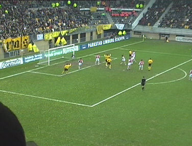
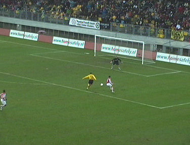
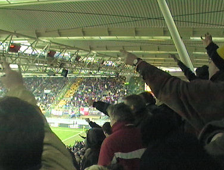

|
Roda JC - PSV (2-0) 28 januari 2007
|
Het lukt Eindhoven ook dit jaar weer niet om het uitvak vol te
krijgen.
Vrije trap Roda. Saeijs loopt weg van zijn tegenstander en...

... kopt 1-0 binnen, (22').
Het boertje Farfan ligt geblesseerd op de grond. Laat nu net boer
Wouters voor deze wedstrijd verklaard hebben dat PSV bij een
blessure van de tegenstander gewoon door zal spelen!
Nou, Roda ook!
Lachambre ruimt knap op. Roda speelt PSV bij vlagen weg maar
verzuimt veel goede doelkansen te benutten.
Hier ontsnapt Roda aan de gelijkmaker. Een schot van Kone
wordt weggestompt door Castro. De bal wordt vervolgens door
Cocu op de lat gekopt.
Het is zwart, het is geel, het is **** *******
Na 5 min.in de tweede helft schiet Cocu rakelings langs.
Ex-Rodaspeler Kone blijft nog steeds een fantastisch technicus
met nog steeds weinig rendement.
Hier wordt Oper gemangeld.
De druk van PSV wordt in de tweede helft steeds groter maar
Roda blijft overeind en countert er af en toe goed uit.

Zoals hier Oper vrij voor doel. Doelman Gomes redt het schot van
de aanvaller echter op sublieme wijze.
Mendez helpt De Fauw overeind.
Tot ontzetting van het publiek schuift Oper deze bal net voorbij
het doel.
.-.-.-
In de 85e min. is het dan toch prijs en schiet Oper, Roda met een
diagonaal schot naar een bijna zekere overwinning.

Danke... Bitte...
De slotfase is spannend en hectisch. Hier deelt Farfan een dreun
uit aan Saeijs die tegen de vlakte gaat.
Na 10 jaar eindelijk weer een thuiszege op PSV.
Alle tribunes worden uitbundig bedankt, de zuidzijde zelfs in
twee etappes deze keer.
Als Roda deze vorm weet vast te houden mag het bereiken van
het "linkerrijtje" geen probleem vormen. Na deze speelronde staat
Roda op een mooie 7e plaats.
Volgens Ronald Koeman was een gelijkspel terecht geweest...
De Jong tussen de groupies. Verder kwamen Rudge, Castro en
Van Dessel naar de Kickoff.
En alweer geen gratis bier. De mythe van het "vat van Aevitae" is
bij deze weerlegd!
© Koempels Pleasure Dome
|